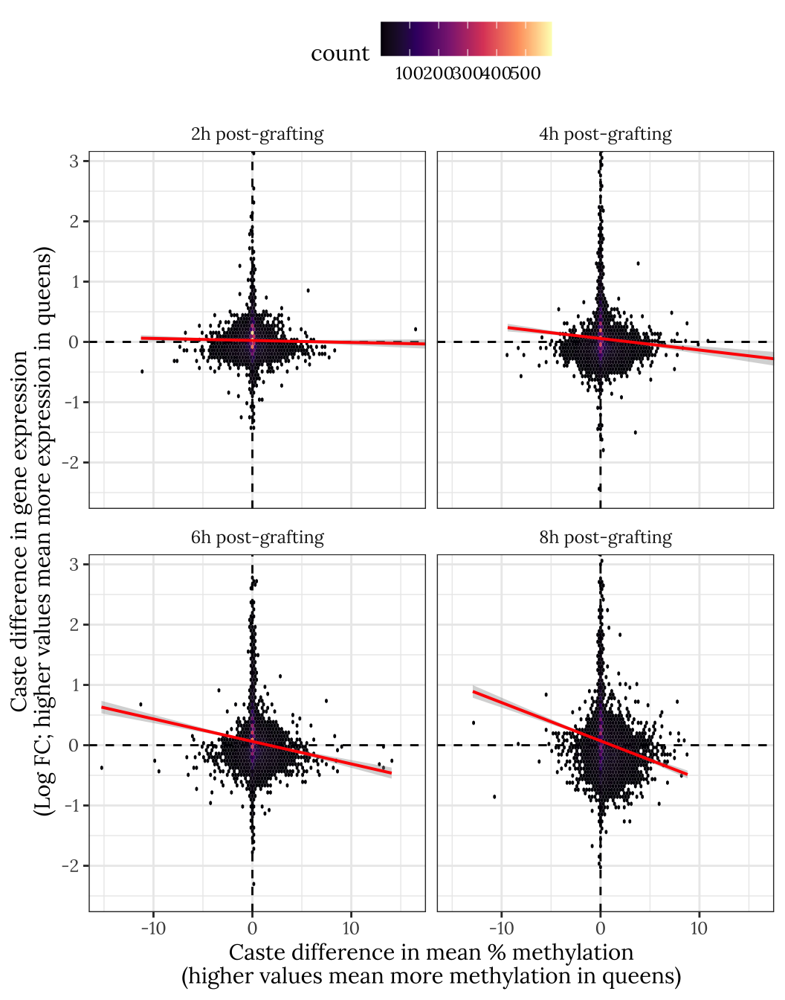
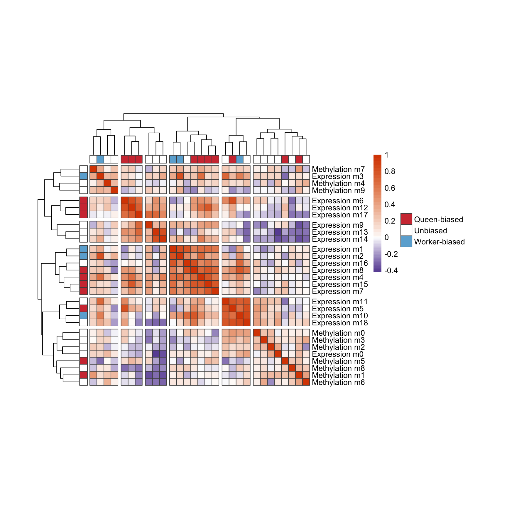
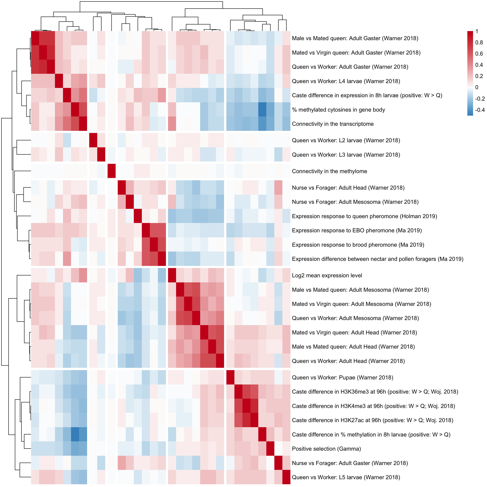
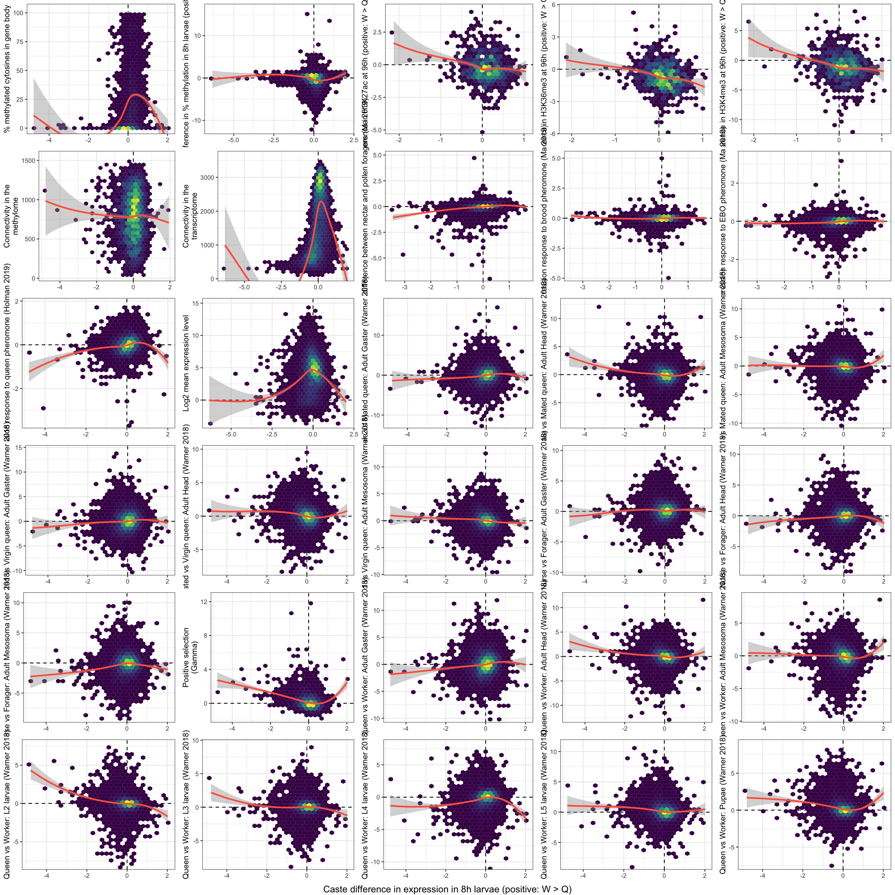
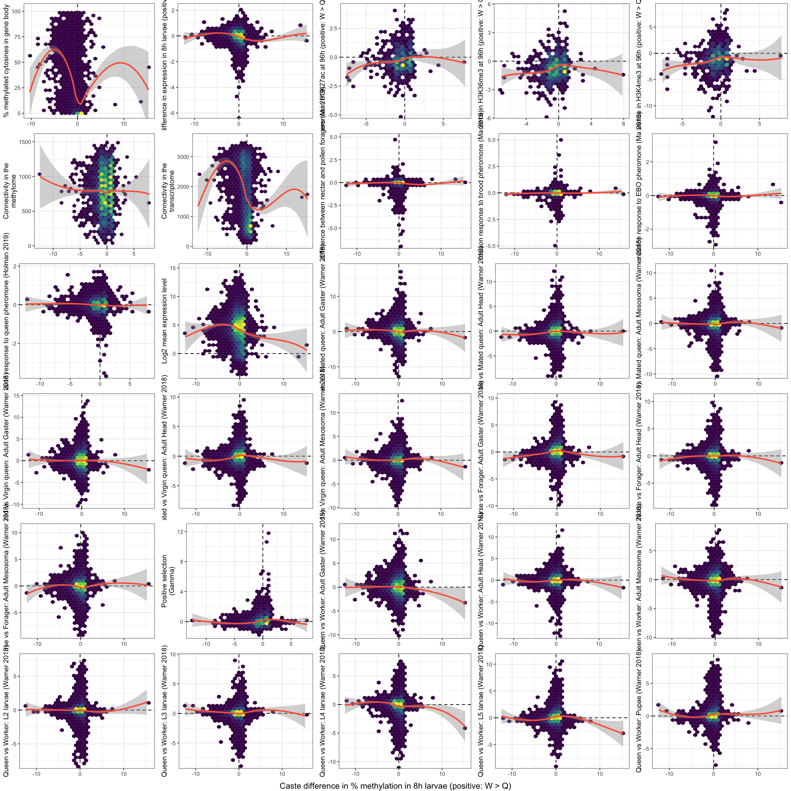

Last updated: 2020-07-27
Checks: 6 1
Knit directory: Methylation_Apis/
This reproducible R Markdown analysis was created with workflowr (version 1.6.2). The Checks tab describes the reproducibility checks that were applied when the results were created. The Past versions tab lists the development history.
The R Markdown file has unstaged changes. To know which version of the R Markdown file created these results, you’ll want to first commit it to the Git repo. If you’re still working on the analysis, you can ignore this warning. When you’re finished, you can run wflow_publish to commit the R Markdown file and build the HTML.
Great job! The global environment was empty. Objects defined in the global environment can affect the analysis in your R Markdown file in unknown ways. For reproduciblity it’s best to always run the code in an empty environment.
The command set.seed(20190712) was run prior to running the code in the R Markdown file. Setting a seed ensures that any results that rely on randomness, e.g. subsampling or permutations, are reproducible.
Great job! Recording the operating system, R version, and package versions is critical for reproducibility.
Nice! There were no cached chunks for this analysis, so you can be confident that you successfully produced the results during this run.
Great job! Using relative paths to the files within your workflowr project makes it easier to run your code on other machines.
Great! You are using Git for version control. Tracking code development and connecting the code version to the results is critical for reproducibility.
The results in this page were generated with repository version 291f41b. See the Past versions tab to see a history of the changes made to the R Markdown and HTML files.
Note that you need to be careful to ensure that all relevant files for the analysis have been committed to Git prior to generating the results (you can use wflow_publish or wflow_git_commit). workflowr only checks the R Markdown file, but you know if there are other scripts or data files that it depends on. Below is the status of the Git repository when the results were generated:
Ignored files:
Ignored: .DS_Store
Ignored: .Rapp.history
Ignored: .Rproj.user/
Ignored: Expression/
Ignored: analysis/figure/
Ignored: data/
Ignored: figures/.DS_Store
Ignored: output/
Untracked files:
Untracked: figures/meth_nmds_plot.rds
Unstaged changes:
Modified: analysis/compare_expression_and_methylation.Rmd
Modified: analysis/diff_methylation.Rmd
Modified: figures/eigengenes_expression_network.pdf
Modified: figures/eigengenes_meth_network_fig.pdf
Note that any generated files, e.g. HTML, png, CSS, etc., are not included in this status report because it is ok for generated content to have uncommitted changes.
These are the previous versions of the repository in which changes were made to the R Markdown (analysis/compare_expression_and_methylation.Rmd) and HTML (docs/compare_expression_and_methylation.html) files. If you’ve configured a remote Git repository (see ?wflow_git_remote), click on the hyperlinks in the table below to view the files as they were in that past version.
| File | Version | Author | Date | Message |
|---|---|---|---|---|
| html | 184f525 | lukeholman | 2020-07-26 | Build site. |
| Rmd | 441676a | lukeholman | 2020-07-26 | wflow_publish(“analysis/compare_expression_and_methylation.Rmd”) |
library(tidyverse)
library(kableExtra)
library(RColorBrewer)
library(pheatmap)
library(dbplyr)
library(DBI)
library(RSQLite)
library(gridExtra)
# Load annotations and database
annotations <- readRDS("data/Methylation_data/meth_site_annotations.rds")
db <- dbConnect(SQLite(), "data/apis_db.sqlite3") # DBI::dbListTables(db)
# Load BWASP results
bwasp_sig_genes <- readRDS("output/bwasp_sig_genes.rds")
# Load Bayesian GAM methylation results
model_results <- list.files("output/meth_sites_brms",
pattern = "meth_brms_", full.names = TRUE) %>%
map(~ tryCatch(readRDS(.x), error = function(e) NULL))
sites <- map_chr(model_results, ~ .x$site)
caste_difference <- map(model_results, ~ .x$caste_difference)
caste_difference <- map_df(1:length(caste_difference),
~ mutate(caste_difference[[.x]], site = sites[.x]))
time_difference <- map(model_results, ~ .x$time_difference)
time_difference <- map_df(1:length(time_difference),
~ mutate(time_difference[[.x]], site = sites[.x])) %>%
filter(!is.nan(Estimate))
# Criterion for significance: B-H adjusted p < 0.05
sig_sites_caste <- caste_difference %>%
group_by(site) %>%
summarise(sig = ifelse(any(p.adjust(p, method = "BH") < 0.05), TRUE, FALSE),
.groups = "drop") %>%
filter(sig) %>% pull(site)
sig_sites_time <- time_difference %>%
group_by(site, Caste) %>%
summarise(sig = ifelse(any(p.adjust(p, method = "BH") < 0.05), TRUE, FALSE),
.groups = "drop") %>%
filter(sig) %>%
spread(Caste, sig)
sig_sites_time_queen <- sig_sites_time %>% filter(q) %>% pull(site)
sig_sites_time_worker <- sig_sites_time %>% filter(w) %>% pull(site)
gene_meth_results_table <- tibble(site = sites) %>%
left_join(annotations, by = "site") %>%
dplyr::select(gene_name, gene, site) %>%
mutate(sig_caste = ifelse(site %in% sig_sites_caste, "\\*", " "),
sig_time_queen = ifelse(site %in% sig_sites_time_queen, "\\*", " "),
sig_time_worker = ifelse(site %in% sig_sites_time_worker, "\\*", " "),
site_old = site,
site = map_chr(strsplit(site, split = "~"),
~ paste0(c(.x[1], .x[2]), collapse = ", pos:"))) %>%
arrange(desc(sig_caste), desc(sig_time_queen), desc(sig_time_worker), gene_name)
# Define a function to test whether the overlap of two sets of differentially expressed genes,
# drawn from a common pool (e.g. all the orthologs that were tested), is higher or lower than expected
# Inspiration for this code: https://stats.stackexchange.com/questions/10328/using-rs-phyper-to-get-the-probability-of-list-overlap
overlap_hypergeometric_test <- function(
n_overlaps, n_gene_set1, n_in_set2, overall_n_genes){
# Expected number of overlaps under the null the two gene lists are independent
exp_n_overlaps <- overall_n_genes * (n_gene_set1 / overall_n_genes) * (n_in_set2 / overall_n_genes)
if(n_overlaps > exp_n_overlaps){ # p getting that number or larger...
p <- 1 - phyper(n_overlaps - 1, n_gene_set1,
overall_n_genes - n_gene_set1, n_in_set2)
}
if(n_overlaps < exp_n_overlaps){ # p getting that number or smaller...
p <- phyper(n_overlaps - 1, n_gene_set1,
overall_n_genes - n_gene_set1, n_in_set2)
}
tibble(
`Observed n overlaps` = n_overlaps,
`Expected n overlaps` = NA,
`Enrichment ratio` = round(n_overlaps / exp_n_overlaps, 2),
`One-tailed p` = round(p, 4)) %>% # p-value that the overlap is *higher* than expected under the null
mutate(`Expected n overlaps` = round(exp_n_overlaps, 1))
}
# define plot colours
queen_colour <- "#d13b40"
worker_colour <- RColorBrewer::brewer.pal(7, "Blues")[4]Here, we give tables showing genes that showed a statistically significant caste difference for both expression and methylation.
We also use a hypergeometric test to test how many genes were significant (and how many were tested in total) in both the differential expression and differential methylation assays, and test whether the number of overlaps is greater or lower than expected under the null model that the two gene lists are independent (using a hypergeometric test via the phyper function).
Using the BWASP results, the overlap of gene lists was not significant. However for the Bayesian GAM, the overlap was lower than expected under the null (\(p < 0.0001\)), indicating that the genes that show differential methylation are less likely than average to show differential expression (and vice versa).
Notably, Complementary sex determiner is significant in all three analyses (expression, and both versions of the methylation analyses). maternal protein tudor shows differential expression, and significant differential methylation (in the Bayesian GAM).
genes_tested_meth <- colnames(readRDS("data/Methylation_data/input_data_for_meth_network_CLEANED.rds"))
genes_tested_expr <- read_csv("output/caste_results.csv")$`Gene symbol` %>% unique()
universe <- intersect(genes_tested_expr, genes_tested_meth)
sig_diff_expr <- read_csv("output/caste_results.csv") %>%
filter(adj.P.Val < 0.05 & `Gene symbol` %in% universe) %>% pull(`Gene symbol`) %>% unique()
sig_diff_meth <- bwasp_sig_genes$bwasp_caste_sig_genes$`Gene name` %>% as.character() %>% unique()
inters <- intersect(sig_diff_expr, annotations$gene[match(sig_diff_meth, annotations$gene_name)])
n_overlaps <- length(inters)
bwasp_table <- annotations %>%
filter(gene %in% inters) %>%
dplyr::select(gene_name) %>% distinct() %>%
dplyr::rename(`Genes showing both differential expression and methylation (BWASP pipeline)` = gene_name)
bwasp_hypergeometric <- overlap_hypergeometric_test(
n_overlaps,
length(sig_diff_expr),
length(sig_diff_meth),
length(universe))
bwasp_table %>%
kable() %>% kable_styling(full_width = FALSE) | Genes showing both differential expression and methylation (BWASP pipeline) |
|---|
| complementary sex determiner |
| regulator of nonsense transcripts 2 |
| serine palmitoyltransferase 2 |
| transforming growth factor beta regulator 1 |
bwasp_hypergeometric %>%
kable() %>% kable_styling(full_width = FALSE)| Observed n overlaps | Expected n overlaps | Enrichment ratio | One-tailed p |
|---|---|---|---|
| 4 | 5.8 | 0.69 | 0.123 |
genes_tested_meth <- map_chr(model_results, ~ .x$genes$gene[1]) %>% unique()
universe <- intersect(genes_tested_expr, genes_tested_meth)
sig_diff_meth <- gene_meth_results_table %>%
filter(sig_caste == "\\*" & gene %in% universe) %>% pull(gene) %>% unique()
inters <- intersect(sig_diff_expr, sig_diff_meth)
n_overlaps <- length(inters)
bayes_table <- annotations %>%
filter(gene %in% inters) %>%
dplyr::select(gene_name) %>% distinct() %>%
dplyr::rename(`Genes showing both differential expression and methylation (Bayesian GAM)` = gene_name)
bayes_hypergeometric <- overlap_hypergeometric_test(
n_overlaps,
length(sig_diff_expr),
length(sig_diff_meth),
length(universe))
bayes_table %>%
kable() %>% kable_styling(full_width = FALSE) %>%
scroll_box(height = "300px")| Genes showing both differential expression and methylation (Bayesian GAM) |
|---|
| maternal protein tudor |
| complementary sex determiner |
| uncharacterized LOC113218557 |
| protein PF14_0175 |
| probable deoxyhypusine synthase |
| cytosolic Fe-S cluster assembly factor NUBP1 homolog |
| polycomb protein suz12-B |
| CCAAT/enhancer-binding protein zeta |
| TBC domain-containing protein kinase-like protein |
| kinesin 2B |
| WD repeat-containing protein 19 |
| zinc transporter foi |
| DNA fragmentation factor subunit alpha |
| exocyst complex component 3 |
| E3 ubiquitin-protein ligase synoviolin A |
| activated Cdc42 kinase-like |
| ribosome biogenesis protein BMS1 homolog |
| protein arginine N-methyltransferase 9 |
| multifunctional protein ADE2 |
| uncharacterized LOC412432 |
| MATH and LRR domain-containing protein PFE0570w |
bayes_hypergeometric %>%
kable() %>% kable_styling(full_width = FALSE)| Observed n overlaps | Expected n overlaps | Enrichment ratio | One-tailed p |
|---|---|---|---|
| 21 | 130.1 | 0.16 | 0 |
This binned scatterplot illustrates that genes showing queen-biased methylation tended to show worker-biased expression, and vice versa. The relationship appears weak and noisy, though we note that both the x and y axes are measured with considerable error, which would obscure the underlying correlation. The relationship appears to grow stronger at later time points, and the correlation is significantly negative for the 4h, 6h, and 8h (but not 2h) time points.
if(!file.exists("output/meth_geneExpr_relationship_data_caste.csv")){
meth_geneExpr_relationship_data_caste <- read_csv("output/caste_results.csv") %>%
select(Time, `Gene symbol`, logFC) %>%
left_join(vroom::vroom("data/methyl_diff_results/methyl_diff_results.tsv") %>%
filter(grepl("queen", comparison) & grepl("worker", comparison)) %>%
mutate(time = str_extract(comparison, "[2468]")) %>%
group_by(Genes, time) %>%
summarise(mean_meth_diff = mean(meth.diff)) %>%
mutate(time = as.numeric(time)),
by = c(`Gene symbol` = "Genes", "Time" = "time")) %>%
filter(!is.na(mean_meth_diff) & !is.na(logFC))
meth_geneExpr_relationship_data_timeQ <- read_csv("output/time_results.csv") %>%
filter(Caste == "Queen") %>%
select(Time, `Gene symbol`, logFC) %>%
left_join(vroom::vroom("data/methyl_diff_results/methyl_diff_results.tsv") %>%
filter(grepl("queen", comparison) & !grepl("worker", comparison)) %>%
mutate(time = str_extract_all(comparison, "[2468]") %>%
map_chr(~ paste0(.x, collapse = " vs "))) %>%
group_by(Genes, time) %>%
summarise(mean_meth_diff = mean(meth.diff)),
by = c(`Gene symbol` = "Genes", "Time" = "time")) %>%
filter(!is.na(mean_meth_diff) & !is.na(logFC))
meth_geneExpr_relationship_data_timeW <- read_csv("output/time_results.csv") %>%
filter(Caste == "Worker") %>%
select(Time, `Gene symbol`, logFC) %>%
left_join(vroom::vroom("data/methyl_diff_results/methyl_diff_results.tsv") %>%
filter(!grepl("queen", comparison) & grepl("worker", comparison)) %>%
mutate(time = str_extract_all(comparison, "[2468]") %>%
map_chr(~ paste0(.x, collapse = " vs "))) %>%
group_by(Genes, time) %>%
summarise(mean_meth_diff = mean(meth.diff)),
by = c(`Gene symbol` = "Genes", "Time" = "time")) %>%
filter(!is.na(mean_meth_diff) & !is.na(logFC))
write_csv(meth_geneExpr_relationship_data_caste, "output/meth_geneExpr_relationship_data_caste.csv")
write_csv(meth_geneExpr_relationship_data_timeQ, "output/meth_geneExpr_relationship_data_timeQ.csv")
write_csv(meth_geneExpr_relationship_data_timeW, "output/meth_geneExpr_relationship_data_timeW.csv")
} else {
meth_geneExpr_relationship_data_caste <- read_csv("output/meth_geneExpr_relationship_data_caste.csv")
meth_geneExpr_relationship_data_timeQ <- read_csv("output/meth_geneExpr_relationship_data_timeQ.csv")
meth_geneExpr_relationship_data_timeW <- read_csv("output/meth_geneExpr_relationship_data_timeW.csv")
}
hex_plot <- function(dat){
ggplot(dat, aes(-1 * mean_meth_diff, logFC)) +
geom_hline(yintercept = 0, linetype = 2) +
geom_vline(xintercept = 0, linetype = 2) +
geom_hex(bins = 50) +
stat_smooth(method = "lm", size = .7, colour = "red") +
xlab("Caste difference in mean % methylation\n(higher values mean more methylation in queens)") +
ylab("Caste difference in gene expression\n(Log FC; higher values mean more expression in queens)") +
facet_wrap(~ paste(Time, "h post-grafting", sep = "")) +
scale_fill_viridis_c(option = "A", direction = 1)
}
meth_geneExpr_relationship_data_caste %>% hex_plot()
| Version | Author | Date |
|---|---|---|
| 184f525 | lukeholman | 2020-07-26 |
# meth_geneExpr_relationship_data_timeQ %>% hex_plot()
# meth_geneExpr_relationship_data_timeW %>% hex_plot()There is a significant, negative relationship between the caste bias in methylation and the caste bias in gene expression, at times 4h, 6h, and 8h (but not time 2h) post-grafting. The gene-level estimates of % cytosine methylation come from BWASP, and the estimates of the logFC in expression comes from RSEM.
run_corr <- function(time, dat){
xx <- cor.test(
filter(dat, Time == time)$mean_meth_diff * -1,
filter(dat, Time == time)$logFC,
method = "spearman")
tibble(time = time, rho = xx$estimate, p = xx$p.value)
}
map_df(c(2,4,6,8), ~ run_corr(time = .x, dat = meth_geneExpr_relationship_data_caste)) %>%
kable() %>% kable_styling(full_width = FALSE)| time | rho | p |
|---|---|---|
| 2 | -0.0160333 | 0.1141882 |
| 4 | -0.0923266 | 0.0000000 |
| 6 | -0.1677885 | 0.0000000 |
| 8 | -0.2483767 | 0.0000000 |
Figure XX: Clustered correlation matrix showing relationships between pairs of modules from the network analyses of co-expression and co-methylation. The colour shows the sign and magnitude of the Pearson correlations between the module eigengenes from the expression and methylation networks. A positive correlation between expression module \(i\) and methylation module \(j\) indicates that samples which had comparatively high expression of the genes in \(i\) tended to have comparatively high rates of methylation in \(j\). The negative relationship between expression and methylation (where workers have higher methylation, and queens higher expression, across large numbers of genes) is apparent.
mod_data <- left_join(
readRDS("output/meth_eigengenes.rds") %>%
dplyr::rename(Replicate = Rep) %>%
select(Sample, Module, Eigengene) %>%
spread(Module, Eigengene) %>%
rename_all(~ str_replace_all(.x, "Module ", "Methylation m")),
read_csv("output/expression_eigengenes.csv") %>%
dplyr::select(Sample, Module, Eigengene) %>%
mutate(Sample = str_remove_all(Sample, "RNAseq_tg_"),
Sample = str_remove_all(Sample, "_rep_")) %>%
spread(Module, Eigengene) %>%
rename_all(~ str_replace_all(.x, "Module ", "Expression m")),
by = c("Sample")) %>% dplyr::select(-Sample) %>%
mutate_all(~ as.numeric(scale(.x)))# scale all the eigengenes
cor_mods <- cor(mod_data)
ordering <- hclust(dist(cor_mods))
ordering <- ordering$labels[ordering$order]
tidy_annotation_row <-
bind_rows(
read_csv("output/eigengene_stats_table_expr.csv") %>%
split(.$Module) %>% map(~ sign(.x %>% filter(!is.na(X8) & X8 != "~" & Time != 2) %>% pull(Estimate))) %>%
map_chr(~ {
if(length(.x) == 0) return("Unbiased")
ifelse(unique(.x) == 1, "Queen-biased", "Worker-biased")
}) %>%
enframe("Module", "Direction") %>%
mutate(Module = str_replace_all(Module, "Module ", "Expression m")) ,
read_csv("output/eigengene_stats_table_meth.csv") %>%
split(.$Module) %>% map(~ sign(.x %>% filter(!is.na(X8) & X8 != "~" & Time != 2) %>% pull(Estimate))) %>%
map_chr(~ {
if(length(.x) == 0) return("Unbiased")
ifelse(unique(.x) == 1, "Queen-biased", "Worker-biased")
}) %>%
enframe("Module", "Direction") %>%
mutate(Module = str_replace_all(Module, "Module ", "Methylation m")) ) %>%
mutate(Module = factor(Module, levels = ordering)) %>%
arrange(Module) %>% as.data.frame()
annotation_row <- tidy_annotation_row
rownames(annotation_row) <- annotation_row$Module
annotation_row <- annotation_row %>%
select(Direction) %>% dplyr::rename(` ` = Direction)
paletteLength <- 50
myColor <- colorRampPalette(c(brewer.pal(9, "Purples")[7], "white", brewer.pal(9, "Oranges")[7]))(paletteLength)
myBreaks <- c(seq(min(cor_mods, na.rm=T), 0, length.out=ceiling(paletteLength/2) + 1),
seq(max(cor_mods, na.rm=T)/paletteLength, max(cor_mods, na.rm=T), length.out=floor(paletteLength/2)))
annotation_colors <-
list(` ` = c(`Queen-biased` = queen_colour, Unbiased = "white", `Worker-biased` = worker_colour))
cor_mods %>%
pheatmap(col = myColor, breaks = myBreaks,
annotation_row = annotation_row, annotation_col = annotation_row, annotation_colors = annotation_colors,
cutree_rows = 6, cutree_cols = 6,
border_color = "grey30", number_color = "red",
show_colnames = FALSE)
| Version | Author | Date |
|---|---|---|
| 184f525 | lukeholman | 2020-07-26 |
corr.test_results <- psych::corr.test(mod_data, adjust = "BH")
sig_corr <- reshape2::melt(corr.test_results$p) %>%
dplyr::rename(p = value) %>% filter(p < 0.05) %>%
filter((str_detect(Var1, "Expres") & str_detect(Var2, "Meth")) |
(str_detect(Var2, "Expres") & str_detect(Var1, "Meth"))) %>%
as.data.frame()
sig_corr <- reshape2::melt(corr.test_results$r) %>%
filter(paste(Var1, Var2) %in% paste(sig_corr$Var1, sig_corr$Var2)) %>%
dplyr::rename(`r` = value) %>%
left_join(sig_corr, by = c("Var1", "Var2")) %>%
dplyr::rename(`Expression module` = Var1,
`Methylation module` = Var2) %>%
arrange(p) %>%
mutate(swap = str_detect(`Expression module`, "Meth"),
temp1 = `Expression module`,
temp1 = replace(temp1, swap, `Methylation module`[swap]),
temp2 = `Methylation module`,
temp2 = replace(temp2, swap, `Expression module`[swap]),
`Expression module` = temp1,
`Methylation module` = temp2,
r = format(round(r, 2), nsmall = 2),
p = format(round(p, 4), nsmall = 4)) %>%
dplyr::rename(`Adjusted p` = p) %>%
dplyr::select(-swap, -temp1, -temp2) %>%
left_join(tidy_annotation_row %>% filter(str_detect(Module, "Expression")),
by = c("Expression module" = "Module")) %>% rename(expr_direction = Direction) %>%
left_join(tidy_annotation_row %>% filter(str_detect(Module, "Methylation")),
by = c("Methylation module" = "Module")) %>% rename(meth_direction = Direction) %>%
mutate(`Expression module` = str_remove_all(`Expression module`, "Expression "),
`Methylation module` = str_remove_all(`Methylation module`, "Methylation "),
`Expression module` = paste(`Expression module`, expr_direction, sep = ": "),
`Methylation module` = paste(`Methylation module`, meth_direction, sep = ": ")) %>%
dplyr::select(-ends_with("direction"))Results of Spearman’s correlations testing the null hypothesis that the true correlation between each pair of expression eigengenes and methylation eigengenes is zero. The table shows the 30 pairs of expression and methylation modules whose eigengenes were significantly correlated across samples. All of the correlations are negative, and all of them involve module pairs for which the constituent genes show higher methylation in worker-destined larvae and higher expression in queen-destined larvae. This suggests that groups of genes become hyper-methylated in workers, at the same time as groups of genes are being transcriptionally down-regulated in workers. Or, conversely, that groups of genes become hypo-methylated in queens, at the same time as groups of genes are being transcriptionally up-regulated in queens. The p-values are adjusted for multiple testing using the Benjamini-Hochberg method. Note that the correlation coefficients are quite high, indicating that differences in methylation and expression covary strongly across samples.
sig_corr %>%
kable() %>%
kable_styling(full_width = FALSE) %>%
scroll_box(height = "500px")| Expression module | Methylation module | r | Adjusted p |
|---|---|---|---|
| m12: Queen-biased | m1: Worker-biased | -0.54 | 0.0040 |
| m6: Queen-biased | m2: Worker-biased | -0.51 | 0.0064 |
| m15: Queen-biased | m3: Unbiased | -0.50 | 0.0080 |
| m7: Queen-biased | m3: Unbiased | -0.50 | 0.0084 |
| m15: Queen-biased | m1: Worker-biased | -0.48 | 0.0119 |
| m12: Queen-biased | m3: Unbiased | -0.48 | 0.0120 |
| m4: Queen-biased | m3: Unbiased | -0.47 | 0.0124 |
| m4: Queen-biased | m1: Worker-biased | -0.47 | 0.0134 |
| m6: Queen-biased | m1: Worker-biased | -0.47 | 0.0139 |
| m14: Unbiased | m5: Worker-biased | -0.45 | 0.0174 |
| m12: Queen-biased | m1: Worker-biased | -0.54 | 0.0204 |
| m12: Queen-biased | m2: Worker-biased | -0.44 | 0.0210 |
| m6: Queen-biased | m2: Worker-biased | -0.51 | 0.0288 |
| m12: Queen-biased | m0: Worker-biased | -0.42 | 0.0289 |
| m4: Queen-biased | m2: Worker-biased | -0.42 | 0.0294 |
| m7: Queen-biased | m1: Worker-biased | -0.42 | 0.0309 |
| m5: Queen-biased | m2: Worker-biased | -0.41 | 0.0316 |
| m12: Queen-biased | m5: Worker-biased | -0.41 | 0.0327 |
| m15: Queen-biased | m3: Unbiased | -0.50 | 0.0339 |
| m7: Queen-biased | m3: Unbiased | -0.50 | 0.0350 |
| m0: Unbiased | m5: Worker-biased | 0.41 | 0.0356 |
| m15: Queen-biased | m5: Worker-biased | -0.41 | 0.0357 |
| m0: Unbiased | m3: Unbiased | 0.41 | 0.0358 |
| m6: Queen-biased | m4: Worker-biased | -0.41 | 0.0359 |
| m11: Unbiased | m2: Worker-biased | -0.39 | 0.0460 |
| m12: Queen-biased | m3: Unbiased | -0.48 | 0.0474 |
| m15: Queen-biased | m1: Worker-biased | -0.48 | 0.0474 |
| m4: Queen-biased | m5: Worker-biased | -0.38 | 0.0477 |
| m15: Queen-biased | m0: Worker-biased | -0.38 | 0.0478 |
| m4: Queen-biased | m3: Unbiased | -0.47 | 0.0485 |
source("code/create_merged_data.R")
merged_data <- merged_data %>%
dplyr::select(-beebase, -gene_name, -entrez_id) %>%
dplyr::select(gene, everything())Correlations across Apis genes in all sorts of variables from various studies:
corrs <- merged_data %>%
rename_all(~ str_replace_all(.x, "\n", " ")) %>%
dplyr::select(-gene) %>%
cor(use = "pairwise.complete.obs", method = "spearman")
paletteLength <- 50
myColor <- colorRampPalette(c(brewer.pal(9, "Blues")[6], "white", brewer.pal(9, "Reds")[7]))(paletteLength)
myBreaks <- c(seq(min(corrs, na.rm=T), 0, length.out = ceiling(paletteLength/2) + 1),
seq(max(corrs, na.rm=T)/paletteLength, max(corrs, na.rm=T), length.out=floor(paletteLength/2)))
pheatmap(corrs, color = myColor, breaks = myBreaks,
clustering_distance_rows = "correlation",
clustering_distance_cols = "correlation",
border_color = "grey20",
cutree_rows = 6, cutree_cols = 6, show_colnames = F)
Scatterplots showing some of these same relationships explicitly:
(NB I need to find out what positive logFC means for the Wojciechowski histone data)
make_a_plot <- function(yvar, xvar){
merged_data <- merged_data %>%
dplyr::select(-gene) # %>% mutate_all( ~ as.numeric(scale((.x))))
names(merged_data)[names(merged_data) == yvar] <- "y"
names(merged_data)[names(merged_data) == xvar] <- "x"
merged_data <- merged_data %>%
dplyr::select(x, y)
merged_data <- merged_data[complete.cases(merged_data), ]
merged_data <- merged_data[is.finite(merged_data$y), ]
if(nrow(merged_data) == 0) return(NULL)
ylim <- range(merged_data$y)
ylim[1] <- ylim[1] - (ylim[1]*0.05)
ylim[2] <- ylim[2] + (ylim[2]*0.05)
p <- ggplot(merged_data, aes(x, y)) +
geom_vline(xintercept = 0, linetype = 2, colour = "black")
if(min(merged_data$y) < 0 ) {
p <- p + geom_hline(yintercept = 0, linetype = 2, colour = "black")
}
ylab <- str_remove_all(yvar, "Warner_")
p + stat_bin_hex() +
stat_smooth(method = "loess", colour = "tomato", formula = "y ~ x") +
scale_fill_viridis_c(option = "D") +
coord_cartesian(ylim = ylim) +
ylab(ylab) + xlab(NULL) +
theme_bw(10) +
theme(legend.position = "none")
}
variables <- names(sapply(merged_data, is.numeric)[sapply(merged_data, is.numeric)])
plots_expression <- variables[variables != "Caste difference in expression in 8h larvae (positive: W > Q)"] %>%
sort() %>% lapply(make_a_plot, xvar = "Caste difference in expression in 8h larvae (positive: W > Q)")
plots_expression <- plots_expression[!sapply(plots_expression, is.null)]
plots_meth <- variables[variables != "Caste difference in % methylation in 8h larvae (positive: W > Q)"] %>%
sort() %>% lapply(make_a_plot, xvar = "Caste difference in % methylation in 8h larvae (positive: W > Q)")
plots_meth <- plots_meth[!sapply(plots_meth, is.null)]
do.call(grid.arrange, c(plots_expression, list(bottom = "Caste difference in expression in 8h larvae (positive: W > Q)")))
do.call(grid.arrange, c(plots_meth, list(bottom = "Caste difference in % methylation in 8h larvae (positive: W > Q)")))
rm(plots_expression)
rm(plots_meth)# Define a function to test whether the overlap of two sets of differentially expressed genes,
# drawn from a common pool (e.g. all the orthologs that were tested), is higher or lower than expected
# Inspiration for this code: https://stats.stackexchange.com/questions/10328/using-rs-phyper-to-get-the-probability-of-list-overlap
overlap_hypergeometric_test <- function(n_overlaps, n_gene_set1, n_in_set2, overall_n_genes){
p.higher <- 1 - phyper(n_overlaps - 1, n_gene_set1, overall_n_genes - n_gene_set1, n_in_set2)
# percent_of_maximum_overlaps <- 100 * n.overlaps / min(c(num.sig1, num.sig2))
exp_n_overlaps <- overall_n_genes * (n_gene_set1 / overall_n_genes) * (n_in_set2 / overall_n_genes)
data.frame(Test = "Overlap is higher than expected:",
obs_n_overlaps = n_overlaps,
exp_n_overlaps = round(exp_n_overlaps,1),
enrichment_ratio = round(n_overlaps / exp_n_overlaps, 2),
p = round(p.higher,4)
)
}
velasque_gene_universe <- read_csv("https://raw.githubusercontent.com/MikheyevLab/dsx-rnai/master/data/genes_tpm.csv") %>%
pull (gene_id)
# 9386 genes in common between our two studies
shared_gene_universe <- intersect(rownames(expression_data), velasque_gene_universe)
# Find overlaps with our expression modules, and the dsx-containing module in velasque et al
module_overlaps <- read_csv("output/caste_results.csv") %>%
filter(`Gene symbol` %in% shared_gene_universe) %>%
filter(Time == 8) %>% # Just od time 8h for now
left_join(read_csv("data/apis_gene_comparisons/velasque_doublesex.csv") %>%
mutate(dsx_module = "yes") %>% dplyr::select(gene, dsx_module),
by = c(`Gene symbol` = "gene")) %>%
mutate(dsx_module = replace(dsx_module, is.na(dsx_module), "no")) %>%
group_by(module, dsx_module) %>%
summarise(n=n(), .groups = "drop") %>%
arrange(module, dsx_module)
shared_gene_universe_meth <- intersect(
readRDS(file = "output/gene_meth_module_memberships.rds")$gene,
velasque_gene_universe)
# Find overlaps with our METHYLATION modules, and the dsx-containing module in velasque et al
module_overlaps_meth <- readRDS(file = "output/gene_meth_module_memberships.rds") %>%
filter(gene %in% shared_gene_universe_meth) %>%
left_join(read_csv("data/apis_gene_comparisons/velasque_doublesex.csv") %>%
mutate(dsx_module = "yes") %>% dplyr::select(gene, dsx_module),
by = "gene") %>%
mutate(dsx_module = replace(dsx_module, is.na(dsx_module), "no")) %>%
group_by(module, dsx_module) %>%
summarise(n=n(), .groups = "drop") %>%
arrange(module, dsx_module)
n_genes_in_dsx_module <- sum(with(module_overlaps, n[dsx_module == "yes"]))
module_overlaps %>%
split(.$module) %>%
map_df(function(x){
present_study_module_size <- sum(x$n)
n_overlaps <- with(x, n[dsx_module == "yes"])
data.frame(Module = x$module[1],
overlap_hypergeometric_test(n_overlaps,
n_genes_in_dsx_module,
present_study_module_size,
length(shared_gene_universe)))
}) %>% arrange(-enrichment_ratio) %>%
mutate(p_adjust = p.adjust(p, method = "BH")) %>%
filter(p_adjust < 0.05)
# for methylation:
module_overlaps_meth %>%
split(.$module) %>%
keep(~ nrow(.x) > 1) %>%
map_df(function(x){
present_study_module_size <- sum(x$n)
n_overlaps <- with(x, n[dsx_module == "yes"])
data.frame(Module = x$module[1],
overlap_hypergeometric_test(n_overlaps,
n_genes_in_dsx_module,
present_study_module_size,
length(shared_gene_universe)))
}) %>% arrange(-enrichment_ratio) %>%
mutate(p_adjust = p.adjust(p, method = "BH")) %>%
filter(p_adjust < 0.05)
# Comparison with doublesex module in velasque et al. https://www.biorxiv.org/content/10.1101/314492v1.full
read_csv("output/caste_results.csv") %>%
filter(adj.P.Val <= 0.05) %>%
right_join(read_csv("data/apis_gene_comparisons/velasque_doublesex.csv"), b
y = c(`Gene symbol` = "gene")) %>%
filter(!is.na(kWithin) & !is.na(logFC.x)) %>%
filter(Time == 8) %>% print(n=Inf)
x <- read_tsv("~/Downloads/Methldiff_t0q8.txt")
e %>% full_join(caste_results %>% filter(Time==8), by = c("Genes" = "Gene symbol")) %>%
filter(adj.P.Val < 0.05) %>%
filter(qvalue < 0.05) %>%
group_by(Genes) %>%
summarise(n=n(), .groups = "drop")
x %>%
filter(qvalue < 0.05) %>%
full_join(caste_results %>%
filter(Time==8 & adj.P.Val <= 0.05), # 8h sig genes
by = c("Genes" = "Gene symbol")) %>%
mutate(type = case_when(
!is.na(meth.diff) & !is.na(logFC) ~ "both",
!is.na(meth.diff) & is.na(logFC) ~ "meth only",
is.na(meth.diff) & !is.na(logFC) ~ "expr only"
)) %>% pull(type) %>% table()
caste_results %>% filter(Time==8) %>% pull(`Gene symbol`) %>% unique %>% length()
x %>% pull(Genes) %>% unique %>% length()
overlap_hypergeometric_test(415, 415+2014, 415+1195, nrow(expression_data))
# Load all the QvsW at each time point tests
meth_data <- map(c(2,4,6,8), function(i) {
glue::glue("/Users/lholman/Downloads/Methylation/Caste\ specific\ results/Routput-q{i}w{i}/DMSG/dmg-Am_HE_queen{i}.vs.worker{i}_details.txt") %>%
read_tsv() %>%
mutate(Time = i) %>%
dplyr::rename_at(vars(starts_with("queen")), ~ "queen" ) %>%
dplyr::rename_at(vars(starts_with("worker")), ~ "worker")
}) %>%
bind_rows() %>%
select(Time, everything()) %>%
select(-width, -strand, -coverage1, -coverage2) # width is always 1, strand is always +. Coverage is just Cs + Ts
with(meth_data, paste(seqnames, start)) %>% unique %>% length()
meth_data %>%
group_by(Time) %>% summarise(n(), .groups = "drop")
meth_data %>%
arrange(-abs(queen-worker))
meth_data %>%
mutate(
cluster = kmeans(10^10*as.numeric(as.factor(meth_data$seqnames)) + meth_data$start, 224)$cluster
) %>%
ggplot(aes(start, queen-worker, fill = queen-worker, group=1, size = is.dm)) +
geom_hline(yintercept = 0) +
geom_point(pch = 21) +
# geom_point(aes(y=worker), colour = "red") +
facet_wrap(~ cluster, scales = "free_x") +
scale_fill_gradient2() +
theme(strip.background = element_blank(),
strip.text = element_blank())
xx <- read_tsv("/Users/lholman/Downloads/Methylation/Caste\ specific\ results/Routput-q8w8/DMSG/dmg-Am_HE_queen8.vs.worker8_details.txt")
dmr <- xx %>% filter(is.dm) %>% as.data.frame()
dmr %>% pull(gene_Name) -> dm_genes
select(gene_start, gene_end) %>%
mutate(site = 1:n()) %>%
gather(metric, position, -site) %>%
ggplot(aes(position, y=1, group = site)) +
geom_line()
# meth counts for genes:
files <- list.files("/Users/lholman/Downloads/Methylation", pattern = "ogl-Am_HE", recursive = T, full.names = T)
files <- files[!grepl("vs", files)]
files <- files[!grepl("OGLall", files)]
meth_genes <- map_df(files, ~ read_tsv(.x) %>%
mutate(caste = "t0",
caste = replace(caste, str_detect(.x, "queen"), "queen"),
caste = replace(caste, str_detect(.x, "worker"), "worker"),
time = as.numeric(str_remove_all(unlist(str_extract_all(.x, "[:digit:][.]txt")), "[.]txt")),
file = .x)) %>%
mutate(gene_ID = str_remove_all(gene_ID, "gene[-]")) %>%
distinct(gene_ID, caste, time, .keep_all = TRUE) %>%
dplyr::arrange(gene_ID, caste, time)
meth_test_one_gene <- function(gene){
focal_data <- meth_genes %>%
filter(gene_ID == gene & caste != "t0") %>%
mutate(percent_meth = `%perSite`)
response <- cbind(focal_data$percent_meth,
100 - focal_data$percent_meth) %>% round()
focal_data
}
meth_test_one_gene("Snf")
sessionInfo()R version 4.0.0 (2020-04-24)
Platform: x86_64-apple-darwin17.0 (64-bit)
Running under: macOS Catalina 10.15.4
Matrix products: default
BLAS: /Library/Frameworks/R.framework/Versions/4.0/Resources/lib/libRblas.dylib
LAPACK: /Library/Frameworks/R.framework/Versions/4.0/Resources/lib/libRlapack.dylib
locale:
[1] en_AU.UTF-8/en_AU.UTF-8/en_AU.UTF-8/C/en_AU.UTF-8/en_AU.UTF-8
attached base packages:
[1] stats graphics grDevices utils datasets methods base
other attached packages:
[1] gridExtra_2.3 RSQLite_2.2.0 DBI_1.1.0 dbplyr_1.4.4
[5] pheatmap_1.0.12 RColorBrewer_1.1-2 kableExtra_1.1.0 forcats_0.5.0
[9] stringr_1.4.0 dplyr_1.0.0 purrr_0.3.4 readr_1.3.1
[13] tidyr_1.1.0 tibble_3.0.1 ggplot2_3.3.1 tidyverse_1.3.0
loaded via a namespace (and not attached):
[1] nlme_3.1-148 fs_1.4.1 lubridate_1.7.8 bit64_0.9-7
[5] webshot_0.5.2 httr_1.4.1 rprojroot_1.3-2 tools_4.0.0
[9] backports_1.1.7 R6_2.4.1 mgcv_1.8-31 colorspace_1.4-1
[13] withr_2.2.0 tidyselect_1.1.0 mnormt_2.0.0 bit_1.1-15.2
[17] compiler_4.0.0 git2r_0.27.1 cli_2.0.2 rvest_0.3.5
[21] xml2_1.3.2 labeling_0.3 scales_1.1.1 hexbin_1.28.1
[25] psych_1.9.12.31 digest_0.6.25 rmarkdown_2.3 pkgconfig_2.0.3
[29] htmltools_0.5.0 highr_0.8 rlang_0.4.6 readxl_1.3.1
[33] rstudioapi_0.11 farver_2.0.3 generics_0.0.2 jsonlite_1.7.0
[37] vroom_1.2.1 magrittr_1.5 Matrix_1.2-18 Rcpp_1.0.4.6
[41] munsell_0.5.0 fansi_0.4.1 lifecycle_0.2.0 stringi_1.4.6
[45] whisker_0.4 yaml_2.2.1 plyr_1.8.6 grid_4.0.0
[49] blob_1.2.1 parallel_4.0.0 promises_1.1.0 crayon_1.3.4
[53] lattice_0.20-41 haven_2.3.1 splines_4.0.0 hms_0.5.3
[57] tmvnsim_1.0-2 knitr_1.29 pillar_1.4.4 reshape2_1.4.4
[61] reprex_0.3.0 glue_1.4.1 evaluate_0.14 modelr_0.1.8
[65] vctrs_0.3.0 httpuv_1.5.3.1 cellranger_1.1.0 gtable_0.3.0
[69] assertthat_0.2.1 xfun_0.15 broom_0.5.6 later_1.0.0
[73] viridisLite_0.3.0 memoise_1.1.0 workflowr_1.6.2 ellipsis_0.3.1